Bits und Beton — Themen und Fallbeispiele
Online-Vortrag „Immobilienwirtschaft im Spannungsfeld von Bits und Beton – Grenzen, Möglichkeiten und Zukunft der KI rund ums Gebäude" · Digitalforum IVD Mitte 2026 · Mittwoch, 16. September 2026 · 13:45 Uhr, Einwahl 13:30 · Livestream aus dem beedpix-Studio Köln, Moderation Marco Berndt
1. Rahmen — wer zuhört und wie
Wer da sitzt — was sie tun, wo KI heute ansetzt
| Gruppe | Was sie tun | Wie sie KI einsetzen können |
|---|---|---|
| Makler (Verkauf und Vermietung) | Objekte akquirieren, Preis einschätzen, Exposé und Fotos erstellen, Anfragen beantworten, Besichtigungen führen, verhandeln, zum Notar begleiten. Provision nur bei Abschluss. | Exposé-Text und virtuelles Homestaging in Minuten (seit 02.08.2026 kennzeichnen) · Preisindikation per AVM als Erstcheck · Anfragen rund um die Uhr beantworten und qualifizieren (Woody-Prinzip) · Objektdaten maschinenlesbar halten, weil der Kunde bald seinen Agenten schickt (Zillow in ChatGPT). |
| Hausverwalter (Miet- und WEG-Verwaltung) | Mieteranfragen, Schadensmeldungen, Nebenkostenabrechnung, Instandhaltung, Eigentümerversammlungen, Heizung und Energie, Dienstleister steuern. Pauschale pro Einheit, Ertrag hängt an der Zeit pro Vorgang. | Mieter-Chat aus hinterlegten Inhalten mit Quellenangabe · Belege erfassen und Abrechnung plausibilisieren, Freigabe bleibt beim Menschen · Schadensmeldungen automatisch an den richtigen Handwerker · Heizungs-Fernmonitoring (Vonovia: 15 % Energie) · Protokoll- und Schreibentwürfe. |
| Sachverständige und Bewerter | Verkehrswertgutachten nach § 194 BauGB, Beleihungswerte, Gutachten für Gerichte, Erbschaft, Scheidung, Steuer. Haften persönlich für das Ergebnis. | AVM als Vorab-Check und Vergleichsdatenquelle (Sprengnetter: 2,4 Mio Kaufpreise) · Dokumente auswerten: Grundbuch, Teilungserklärung, Baulasten · Textbausteine und Plausibilitätsprüfung · Grenze: der Einzelfall, an dem der Durchschnitt scheitert, ist genau ihr Auftrag (Zillow Offers). |
| Bauträger und Projektentwickler | Grundstück sichern, planen, Genehmigung einholen, bauen lassen, vermarkten. Kapital gebunden, bis verkauft ist; Zinsen und Baukosten fressen die Marge. | Grundrissvarianten und Flächenoptimierung generieren · Bauantrag vorprüfen lassen (KI-Pilot Thüringen, digitaler Antrag in 13 Ländern) · 3D-Betondruck und Bauroboter (Metzingen, 44 Wohnungen) · Digitaler Zwilling für den späteren Betrieb (Berlin TXL). |
| Alle: das kleine Büro mit 1–10 Leuten | Inhaber macht Vertrieb, Verwaltung, Buchhaltung und Marketing selbst. Das teuerste Gut ist seine Zeit. | Der Agent ist der erste Mitarbeiter, der nachts arbeitet: Mails vorsortieren, Termine buchen, Texte entwerfen, Fristen überwachen · mit Einarbeitung, Leitplanken und Haftungsfrage — wer einen Agenten ins Team holt, stellt jemanden ein. |
Publikum
IVD-Mitglieder der Region Mitte (Hessen, Rheinland-Pfalz, Saarland): Makler, Haus- und WEG-Verwalter, Sachverständige, Bauträger. Der IVD nennt sie „Immobilienunternehmerinnen und -unternehmer" — meist Inhaber kleiner Büros. Praktiker, kein Tech-Publikum. Sie kennen ChatGPT-Exposés und virtuelles Homestaging, keine Modelle.
Format
Livesendung, Chat-Modul für Fragen. Du bist per Zoom zugeschaltet, teilst deinen Screen von Anfang an, die Regie blendet dich als Picture-in-Picture ein. Interaktion läuft über den Chat, nicht über Zuruf: Abstimmungsfragen kurz und mit A/B stellen, Moderator liest vor.
Dauer des Slots ist in den Mails nicht genannt — im Technikcheck (heute 15:15, Daniel Kaufmann) klären.
Wo die Branche gerade steht
Digitalforum 2025: acht Referenten zu KI, Kundengewinnung, virtueller Objektpräsentation, datengetriebener Kommunikation. Immobilientag März 2026 in Bad Homburg: Georg Ortner „Warum der Makler den Menschen zu Entscheidungen bewegt – und nicht die KI". Das Publikum hört seit zwei Jahren KI-Tool-Vorträge; dein Platz ist die Einordnung: was trägt, was nicht, was kommt.
Das Programm 2026 ist öffentlich nicht abrufbar (beedpix-Seite leer, IVD nennt nur Datum). Kontakt: ivds@ivd-mitte.de, +49 69 21 93 53 03.
2. Dein Talk, wie er angekündigt ist
Titel bei Berndt Medien (wörtlich): Immobilienwirtschaft im Spannungsfeld von Bits und Beton – Grenzen, Möglichkeiten und Zukunft der KI rund ums Gebäude (WIV)
Kurztext (talks.christophholz.com): Was bedeutet Künstliche Intelligenz für die Immobilienwirtschaft von morgen? Christoph Holz spannt den Bogen vom Beton zur künstlichen Intelligenz: was KI rund um Gebäude, Vermarktung und Verwaltung wirklich kann, wo ihre Grenzen liegen und warum der Standort gerade neu erfunden wird. Anhand anschaulicher Beispiele von Zürcher Zukunfts-Arealen bis Silicon Valley zeigt er, wie aus Flächen Erlebnisse werden und was bleibt, wenn das Büro der Zukunft kein Büro mehr ist.
Die fünf Gedankenexperimente aus dem Langtext:
- Das Büro, das kein Büro mehr ist — wenn Arbeit überall stattfinden kann, wofür bezahlen Mieter dann wirklich?
- Mehr als Wohnen — Hunziker-Areal Zürich: Gemeinschaft als wichtigste Ausstattung.
- Die Halle zum Wohnen — Kalkbreite, Kraftwerk1: Nutzung wichtiger als Widmung.
- Warum gibt es noch Städte, wenn jeder ein Smartphone hat? — die Lage wurde wertvoller, nicht wertloser.
- Der Weber und das Homeoffice — die Weber verließen ihr Homeoffice, weil nur die Fabrik Dampfkraft hatte. Heute dreht sich die Geschichte um.
Deck: iCloud Keynote „2026-079-16 Immobilien.key" · Seite: https://talks.christophholz.com/wohn-und-arbeitsraeume-im-spannungsfeld-von-bits-und-beton.html
3. Bausteine aus deinen Transkripten
Der zentrale Fund: „2026-01-28 Bank Austria Real Estate Kitzbühel" (3 Mitschnitte, 3:13 h) ist ein fast fertiger Immobilien-Vortrag — Betonmischer, 3D-Druck, Standort, Real-Estate-Abteilung gegen ImmoScout, Ethik-Schluss. Zweite Säule: „2022-11-25 Abau Graz" (Stadt-Skalengesetze, Co-Working, Mikrohotel, Friseursessel). Dazu Ötzi/Grundbuch/Notar aus Seefeld 2019 und Innsbruck 2021. Fundstelle = Dateiname im Transkript-Ordner; Absatznummern im bereinigten Text.
Beton — Baustelle, Roboter, Fachkräfte
- Der Betonmischer ohne Führerhaus (Titel-Baustein). „Kreuze einen Tesla mit einem Betonmischer. Warum ist der Betonmischer so groß? Man muss pro Fahrerstunde möglichst viel Beton transportieren — das ist die Ressource. Der braucht in Zukunft kein Führerhaus." Auflösung: „Wer hätte gedacht, dass der Betonmischwagen deshalb so groß ist, weil die Fahrerkosten so hoch sind." Bank Austria Real Estate 01/2026 Abs. 69–71 · BG Bau 09/2023 Abs. 107–111 · Abau Graz 11/2022 Abs. 118–125
- Die 24-Stunden-Baustelle im Wohngebiet. „Wenn es das gibt, verursachen die keine Staus mehr. Dann können die auch Tag und Nacht fahren. Eine 24-Stunden-Baustelle im Wohngebiet." — „Die sind dann auch richtig leise, da muss nicht mehr gehämmert werden." Für Verwalter: Bauzeitenrecht, Lärmschutz, Bauzeit. Bank Austria 01/2026 Abs. 72 · BG Bau 09/2023 Abs. 111
- 3D-Beton-Druck — was er kann, was nicht. „Limitiert auf die Höhe, keine überhängenden Dinge. Der Stahl wird mitverlegt: mehr Drähte, aber keine Bieger mehr. Begrenzt auf Einfamilienhäuser, weil die Dinger noch nicht klettern können." Zahl: „bis zu 70–80 Prozent Einsparung an Beton" durch Hohlräume (Strabag). Online-Anschluss: Metzingen, 44 Wohnungen, Wände gedruckt. Bank Austria 01/2026 Abs. 72–73 · Würth Hochenburger 07/2022 Abs. 81
- „Ein Mann und ein Hund". „Auf der Baustelle der Zukunft gibt es nur noch zwei Mitarbeiter: einen Mann und einen Hund — und der Hund ist dafür zuständig, dass der Mann nichts anfasst. Wer hält das nicht für einen Blödsinn? 90 Prozent der Digitalisierung sind Unfug, wir wissen bloß nicht welche. Wir müssen es ausprobieren." Beste Lach-Pointe des Bau-Komplexes. Würth Hochenburger 07/2022 Abs. 81
- Der Malerroboter an der Fassade. „Die zwei Herren unten stehen vorsichtshalber ziemlich auf der Seite. Wenn der runterfällt, möchte ich nicht drunterstehen." — „3D-druckende Betonroboter, die außen an der Fassade herumkraxeln." Verwalter-Anschluss: Sanierung, Instandhaltungsrücklage. Bank Austria 01/2026 Abs. 73 · BG Bau 09/2023 Abs. 110–111
- Fachkräftemangel, Durchschnittsalter 60. „In den USA fehlen 150.000 Fahrer, im Durchschnitt 60, bei uns 55. Möchte jemand LKW-Fahrer werden? Nein." — „Arbeit, die von KI ersetzt werden kann, ist langweilig, repetitiv, gefährlich. Wenn alles Unmenschliche digitalisiert ist, bleibt der Mensch übrig." Bank Austria 01/2026 Abs. 71 · Abau Graz Abs. 122 · BG Bau Abs. 80
Standort — Stadt, Lage, Homeoffice
- Doppelt so große Stadt = 15 % billiger. „Eine doppelt so große Stadt hat nicht doppelt so viele Tankstellen — es sind 15 % weniger. Noch deutlicher bei den Abwasserkanälen. Und 15 % mehr Patente, 15 % höhere Gehälter, 115 % mehr Kriminalität." Der härteste Baustein für Sachverständige und Lagebewertung. Abau Graz 11/2022 Abs. 79–83
- Die Stadt als Smartphone — der Lockdown-Bruch. „Im Lockdown ist es plötzlich vollkommen wurscht, ob ich in der Stadt lebe oder auf dem Land. Da kommt es darauf an, ob ich 100 oder 50 Quadratmeter habe. Unsere eigentliche Stadt tragen wir als Smartphone mit uns herum." — „Die Stadt ist eine Plattform, um Beziehungen zu pflegen. Eine Stadt ist nicht genug." Scharnier zu Frankfurt 11,1 %. Abau Graz Abs. 84–89 · Bank Austria Abs. 155
- Kitzbühel bekommt die Möglichkeiten von London. „Wenn die eigentliche Wirtschaftsleistung in unseren Köpfen liegt, ist es egal, wo wir sind." Regional-Gag: „Bezirk Kitzbühel — Grundstückspreise: echte Schnäppchen." Für IVD Mitte auf Taunus/Rheingau ummünzen. Bank Austria Abs. 155 · Abau Graz Abs. 91
- Der Weber im Homeoffice. „Die Weber mussten in die Fabrik marschieren, denn dort war die Dampfmaschine, dort war die Energie. Heute haben wir Elektromotoren überall. Warum gibt es überhaupt noch eine Fabrik? Aus Sicherheitsgründen — weil die Geräte zu gefährlich sind. Aber die Zeiten sind vorbei." Deutung: Gebäudetypen sind geronnene Energie- und Sicherheitslogik. Podcast Eckardt 12/2023 Abs. 43 · Weinviertler Wirtschaftsgespräche 04/2026 Abs. 104 · Bank Austria Abs. 117
- San Francisco: nach fünf Minuten ist das Wunder normal. „Dann fährt dieses Auto wie ein besessener Taxifahrer durch die Stadt. Christoph, jetzt musst du sterben. Nach fünf Minuten war das vollkommen normal." — „Jedes fünfte Auto in San Francisco ist ein autonomes Taxi — das da ist der Parkplatz dafür." Immobilien-Anschluss: Stellplatzschlüssel, Tiefgaragen. S-Leasing Mondsee 03/2025 Abs. 291–295 · Bank Austria Abs. 56
- Loft in Milwaukee statt Wohnung in San Francisco. „Wohnung in San Francisco für 2000 Dollar kündigen, Loft in Milwaukee mieten und einmal im Monat einfliegen. Firmen, die keine Menschen von irgendwo engagieren, haben einen massiven Wettbewerbsnachteil." Metagonia 10/2023 Abs. 55
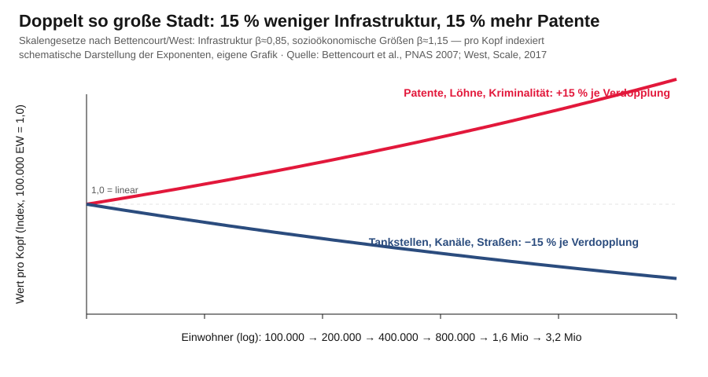
Neue Flächenprodukte — Fläche wird Abo
- Der gemietete Friseursessel. „Kleine Geschäftsflächen, die man sich teilt — wie früher die Markthallen. Wenn sich jemand selbstständig macht, will er nicht zuerst einen großen Raum — dann mietet man sich einfach den Friseursessel." Granularität der Mieteinheit sinkt, Mietvertrag wird Abo. Abau Graz Abs. 93
- Mikrohotel und Wohnen im Abo. „Der Jobnomade macht zwei Monate Zwischenstopp in Kitzbühel und lebt dann in Miami im Mikrohotel — Hotelzimmer plus Arbeitsplatz. 5.000 Euro im Monat, wechseln zwischen Miami und Bali. Was er braucht, ist die Einbindung ins lokale Sozialsystem: Ich kann nicht zwei Monate investieren, um Freunde zu finden." Davor: „Wem ist im Homeoffice die Decke auf den Kopf gefallen?" Abau Graz Abs. 95–103
- Altern zu Hause — der Pflegeroboter zum Anziehen. „Solange die Pflegeperson schläft, steige ich hinten übers Klofenster aus und gehe noch in die Disco." Kern: „Wir hoffen, dass der Pflegebedarf viel stärker zu Hause stattfinden kann." Bestand, Barrierefreiheit, Umbau, Heimplatz-Nachfrage. ARGE Pflege OÖ 11/2025 Abs. 46, 88
- Der selbstfahrende Krankenwagen. „Die KI überwacht, wann Parameter überschritten werden, sucht das Bett — und dann bringt mich ein selbstfahrender Krankenwagen hin, weil wir viel zu wenig Fahrer haben. Wird dazu führen, dass irgendwann einer in einer Fußgängerbrücke hängt." (Kein „selbstfahrendes Krankenhaus" im Archiv.) ARGE Pflege OÖ 11/2025 Abs. 120
Bits — Eigentum, Grundbuch, Daten
- Ötzi → Grundbuch → Blockchain (fertige 5000-Jahre-Dramaturgie). Ötzi hatte Besitz, aber kein Eigentum — er hat die Ziege gegessen und wurde dafür erschlagen; Eigentum ist die Erfindung der Bauern. Dann: „Grundbuchkorruption ist unter den Top 3 der Wachstumsbremsen der dritten Welt. Georgien, Indien, sogar Schweden entziehen sich selbst die Kontrolle über das Grundbuch. Kein Beamter kann mehr eine Ermessensentscheidung treffen. Kein vernünftiger Investor nimmt ein Grundstück, um das gestritten wird." — „Grundbuchtransaktionen im Sekundentakt." Einordnung: löst nicht unser Problem, sondern das der anderen 70 % der Welt. Online-Anschluss: Bundestag 07.05.2026, Notariat digital bis 2028. Lions Seefeld 01/2019 Abs. 35 · RC Innsbruck 07/2021 Abs. 56–60, 102 · Führungsforum Kitzbühel 06/2022 Abs. 64 (totes Kapital Nigeria)
- Der verloste Notar (Live-Nummer). „Wir haben die Notariatsfunktion unter 80 potentiellen Notaren verlost. Legal signieren — zwei Bitcoins. Illegal den Safe ausräumen — ein Bitcoin. Wofür entscheiden Sie sich?" Im Chat als A/B-Frage spielbar. Lions Seefeld 01/2019 Abs. 43–46 · Vorlesung Digitale Ethik 03/2025 Abs. 518
- Das modernste Gebäude der Welt — aus der Lampe verwaltet. „LED-Beleuchtung, die als Stromversorgung ein Computerkabel verwendet — und alle Informationen zurückträgt. Wo muss ich kühlen, wo heizen, welcher Raum wurde benutzt, damit die Putzfrau dort hingeht. Aber die große Frage: Ist das überhaupt revolutionär?" Einziger Smart-Building-Baustein im Archiv; Hannah-Arendt-Pointe: Revolution muss Freiheit bringen. Locations München 12/2019 Abs. 49
- Smart City — und die Kehrseite. „Sensoren messen den Verkehr, Müllcontainer melden, ob sie voll sind. Sehr gute Konzepte. Das heißt aber, dass der öffentliche Raum stärker vermessen wird." Übergang zu Rauchmelder-Datenschutz (Abschnitt 4, Recht). Dr. Google Wattens 09/2019 Abs. 76
- Überwachung als Lagefaktor. „Fragt man jemanden in China zum Social Rating: Super, in meinem Viertel sinkt die Kriminalität und der Wert meiner Wohnung steigt." Für Bewerter der unbequemste Satz. Datenträume 11/2022 Abs. 39
Das Geschäftsmodell des Maklers
- Der Große hat eine Real-Estate-Abteilung, der Kleine nimmt ImmoScout. „Der Große hat eine riesige HR-Abteilung, der Kleine verwendet LinkedIn. Der Große hat eine Real-Estate-Abteilung — der Kleine verwendet ImmoScout24. Und jetzt kommt KI: Sie verbilligt die Transaktionskosten sofort." Coase auf Vermittlung angewandt — direkter Angriff aufs Publikum. Bank Austria 01/2026 Abs. 133 · Volksbank Vorarlberg 10/2025 Abs. 45 · Trixl Fieberbrunn 03/2023 Abs. 102
- „Und die Makler haben einen absoluten Boom." „Wäre euer Job als Handelsagent ohne E-Mail überhaupt möglich gewesen? Gab es so viele Handelsagenten vor der Digitalisierung? Warum bauen die Versicherungen ihre Berater ab? Und die Makler haben einen absoluten Boom." Die entlastende Gegenthese: Digitalisierung zerlegt Konzerne und vermehrt selbstständige Vermittler. WKO Handelsagenten 09/2023 Abs. 136
- Airbnb ohne Airbnb — die Plattform gehört den Wohnungsinhabern. „Airbnb besteht aus 15 bis 20 Verträgen. Als DAO gehört die Firma den Wohnungsinhabern und den Wohnungsnutzern — und bietet die Leistung 30 % günstiger an. Möchte ich 30 % mehr zahlen, damit Jeff Bezos der reichste Mann bleibt? Ich bin ein kapitalistischer Marxist." Genossenschafts-Pointe fürs Verbandspublikum. eFuture Day 04/2018 Abs. 68–71
Einstieg und Rahmen
- Der Demuts-Move vor Fachpublikum. „Das ist vermutlich vollkommener Blödsinn, weil ich kenne mich mit der Bauwirtschaft nicht aus. Ich bewohne eine Wohnung — das ist my experience." Auflösung: „Auf das Konkrete kommt es nicht an. Es kommt darauf an, nicht zu sagen: Das macht mir Angst. Wenn die Angst weggeht, kommt die Innovation." Immunisierungssatz für Profis. Bank Austria 01/2026 Abs. 75, 344
- Einstiegs-Gag ins fremde Fach. „Ich habe gehört, ihr macht Leasing — das kenne ich vom Auto her. Immobilienleasing war mir ein vollkommen neuer Begriff. Also bringe ich ein paar Gedankenexperimente mit." Auf IVD ummünzen: „Ich habe gehört, Sie machen Hausverwaltung …" S-Leasing Mondsee 03/2025 Abs. 178
- Vita-Brücke zum Bau. „Der Architekt hat nach zehn Jahren mal sein Objekt vor sich. Hier drückt man einen Knopf — Hello World — und das Ergebnis kommt sofort. Das macht süchtig. Architektur, Maschinenbau, Elektrotechnik — das ist Methadon dagegen." Bank Austria Abs. 37 · Abau Graz Abs. 44
Was in den Transkripten fehlt — und wo Abschnitt 4 einspringt
- Hunziker-Areal, Kalkbreite, Zürich — 0 Treffer, obwohl im Langtext angekündigt. Nie auf der Bühne erzählt: neu schreiben oder streichen.
- KI-Bewertung, AVM, Sachverständigenarbeit — nichts. Größte Lücke fürs Publikum → Abschnitt 4, Makler (Zillow, AVM).
- Makler-Alltag mit KI (Exposé, Homestaging, Chatbot, Lead-Qualifizierung) — nichts → Abschnitt 4, Makler (KI-Fotos, OLG Hamm, Zillow); Woody-Bausteine aus dem Agentic-Marketing-Talk passen 1:1.
- Hausverwaltung, Nebenkosten, WEG — „Hausverwaltung" erscheint nur als Krankenhausverwaltung → Abschnitt 4, Verwalter.
- Energie am Gebäude, Sanierung, ESG, digitaler Gebäude-Zwilling — nichts; „digitaler Zwilling" meint im Archiv den KI-Avatar Verstorbener oder die Stadt Kitzbühel (Metagonia 2023, Fremdprojekt) → Abschnitt 4, Verwalter/Bauträger.
- Smart Home, BIM, Grundbuch in D/A, Airbnb-Regulierung, Marktzahlen (Zinsen, Baukosten, Leerstand) — nichts → Abschnitt 4, Standort und Recht.
4. Fallbeispiele — nach Zielgruppe, Immobilien zuerst
Jede Karte: Zielgruppe im Kopf, was passiert ist, welche Zahl trägt, wie es in den Talk passt — darunter die Screenshot-Matrix zum Kopieren (2880 × 1800 px Retina, Cookie-Banner entfernt; Dateien in folien/, Klick vergrößert, Rechtsklick → „Bild kopieren“). Alles zu einer Firma steht in einer Karte. Was nichts mit Immobilien zu tun hat, steht ganz unten.
Makler — Vermarktung, Suche, Bewertung
Zillow — vom Bewertungs-Desaster zur Agenten-Suche
Ein Konzern, zwei Lehren. 2021 verlor Zillow mit dem algorithmischen Hauskauf über eine halbe Milliarde Dollar. 2025 wurde derselbe Konzern die erste Immobilien-App in ChatGPT, 2026 verlangt er von Maklern, KI-veränderte Fotos zu kennzeichnen. Wer die Grenze der Statistik am teuersten gelernt hat, baut jetzt den Kanal, über den der Kunden-Agent sucht.
a) Zillow Offers 2021 — der Algorithmus kaufte 30.000 Dollar zu teuer
Zillow kaufte Häuser auf Basis seines Bewertungsmodells, um sie weiterzuverkaufen. Ergebnis: 569 Mio $ Abschreibung, rund 30.000 $ Verlust pro Haus im Bestand, ein Viertel der Belegschaft entlassen, Programm eingestellt. Mechanik: Besitzer guter Häuser verkauften nicht zum Durchschnittspreis, Besitzer schlechter gern — der Algorithmus bekam systematisch die Nieten (Winner's Curse). CEO Barton: die Unvorhersehbarkeit der Preise „übersteigt bei weitem, was wir erwartet haben."
Für den Talk: deine Linie „Statistik sagt über den Einzelfall nichts — die Diktatur des Durchschnitts" mit dem teuersten Beleg der Branche. Stanford-Zitat Amit Seru: Gefahr, „von KI zu begeistert zu sein, ohne die Marktökonomie zu verstehen."
gsb.stanford.edu, geekwire.com
b) Zillow in ChatGPT 2025 — die Suche wandert zum Agenten
Erste Immobilien-App in ChatGPT: „Zillow, zeig mir Häuser in Kansas City" liefert echte Inserate, Karten, Finanzierbarkeit; 800 Mio ChatGPT-Nutzer pro Woche. Zillow hat die App in sechs Wochen gebaut und behält die Kontrolle über die Daten (kein Training).
Für den Talk: der Kunde schickt seinen Agenten — wer nicht im Datensatz steht, wird nicht gefunden. Die Immobilie muss maschinenlesbar sein, bevor sie schön ist. Verbindung zu „Agenten auf beiden Seiten des Tisches".
zillow.mediaroom.com, inman.com
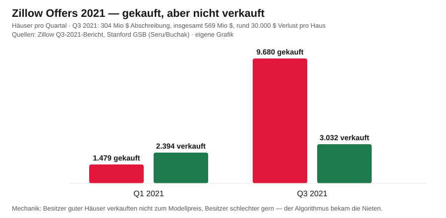

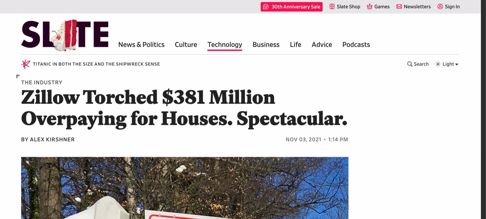
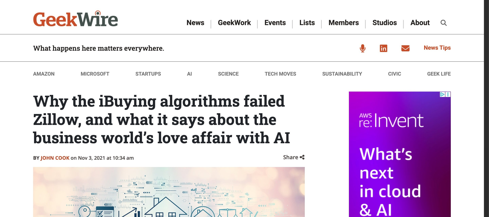
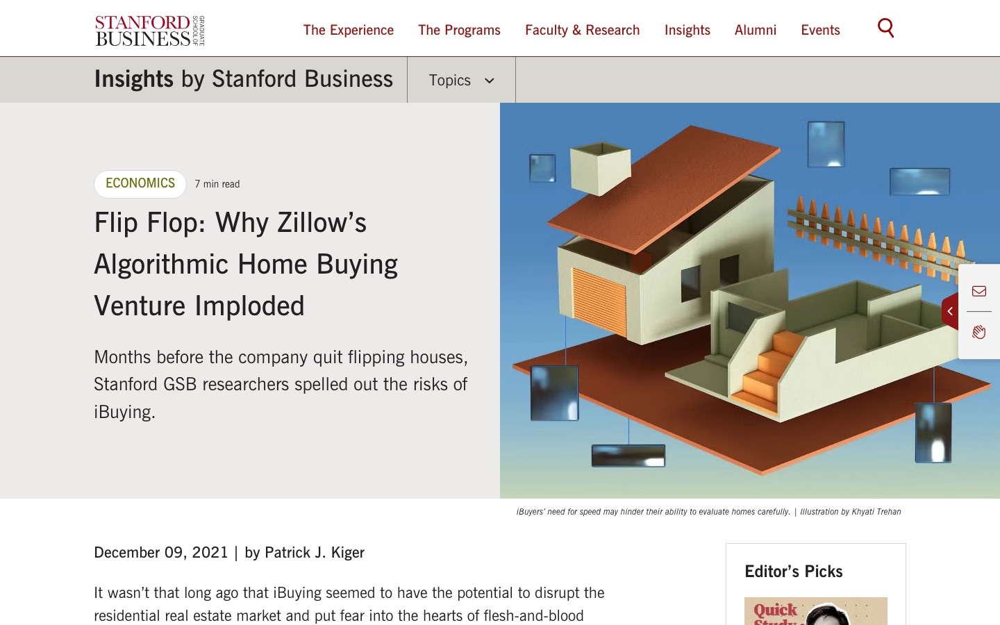


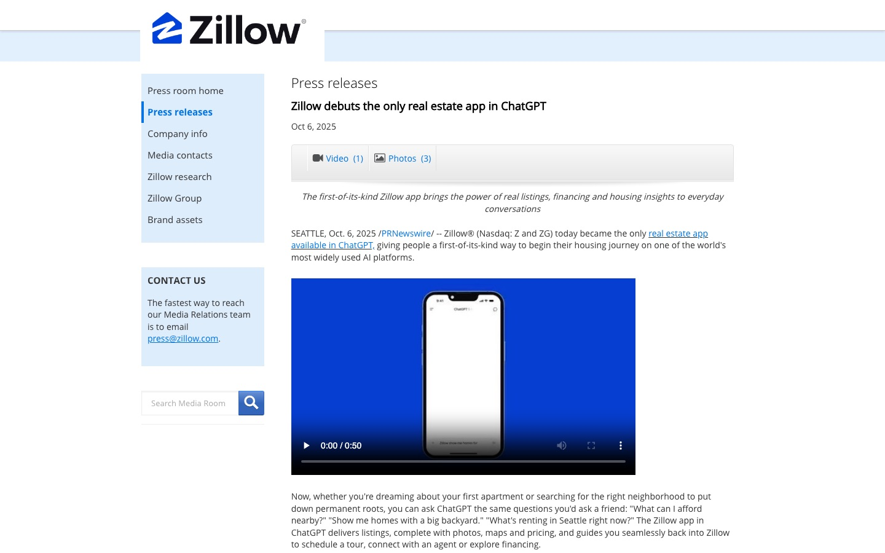
KI-Fotos im Inserat — 11 % der Titelbilder sind manipuliert
Eine Auswertung von rund 40.000 Titelfotos auf Zillow, Redfin, Realtor.com und Homes.com (Q1 2026, Coraly) fand bei knapp 11 % Spuren digitaler Veränderung. Mieter und Käufer dokumentieren auf TikTok und X den Unterschied: helle, große Räume im Inserat, dunkle Zimmer mit Dusche in der Küche vor Ort; ein Haus in Detroit, das dem Foto nicht ähnelt; Marmorboden im Bild, dunkle Fliesen in der Wohnung. New York warnte im November 2025 offiziell vor KI-Inseraten, Kalifornien und Wisconsin verlangen Kennzeichnung, Zillow seit Juli 2026 ebenfalls. In Deutschland gilt seit 02.08.2026 die Kennzeichnungspflicht des AI Act: virtuelles Homestaging zählt juristisch als Deepfake, haftbar ist der veröffentlichende Makler, nicht die Agentur; Folgen nach UWG: Abmahnung, Gewährleistung, Provisionsverlust.
Für den Talk: der Makler-Flop schlechthin — nicht ein Bot, sondern tausend kleine Lügen im Titelbild. Abstimmungsfrage: „Wer hat ein virtuell möbliertes Foto online — gekennzeichnet?“
realestatenews.com (08.09.2026), petapixel.com (27.10.2025), fox13news.com, futurism.com, dos.ny.gov (13.11.2025), immobilien-redaktion.com (05.08.2026), amarc21.de
Purplebricks — der Online-Makler, der 1,4 Milliarden wert war und für ein Pfund verkauft wurde
2014 gegründet, Festpreis statt Provision, TV-Werbung gegen die „Commisery“ klassischer Makler; 2017 an der Börse 1,4 Mrd £ wert, Expansion nach Australien, USA und — über Homeday — Deutschland. Dann Rückzüge aus allen Auslandsmärkten, zwei CEO-Wechsel, Entlassungsrunden, Aktie bei 8 Pence. Juni 2023: Verkauf an Strike für 1 £, 91 % der Aktionäre stimmten zu. Das Modell skalierte die Vermittlung, aber nicht das Vertrauen.
Für den Talk: der Vorläufer jeder „Makler werden überflüssig“-These — und ihr Ende. Dein Baustein „Die Makler haben einen absoluten Boom“ bekommt hier die Gegenprobe.
onlinemarketplaces.com (15.06.2023), theboar.org (18.02.2024)
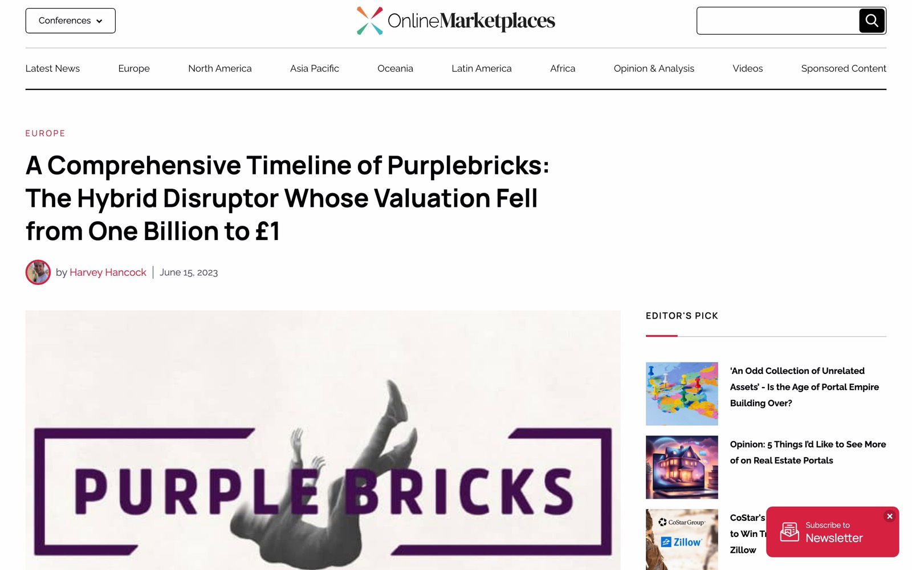
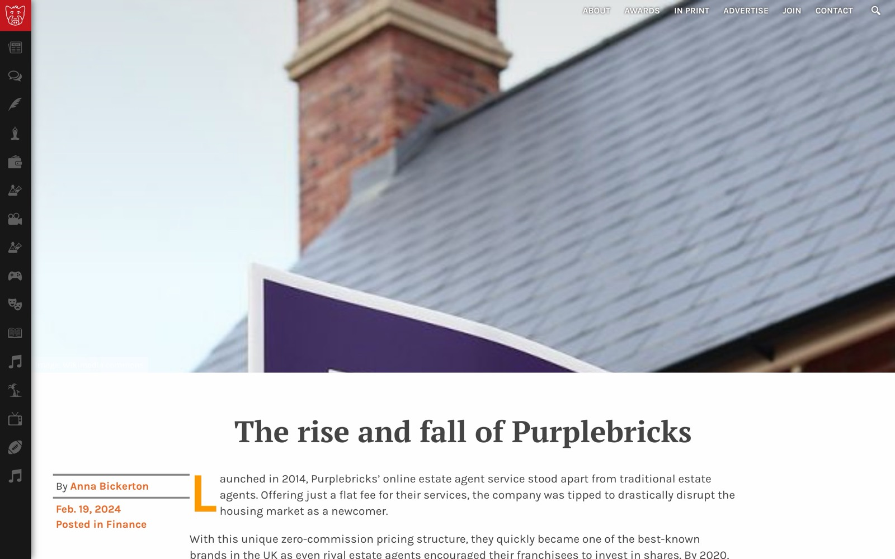
Homeday — der deutsche Hybridmakler, den Axel Springer retten musste
Berliner Start-up, Festpreis-Makler mit Online-Plattform, Investoren Axel Springer und Purplebricks. September 2023: Springer übernimmt komplett, rund 40 Mitarbeiter müssen gehen, die drei Gründer verlassen die Firma, neuer CEO Robert Wagner. Mai 2024: Kehrtwende mit Lizenzmodell für Partnermakler zu besseren Konditionen — also zurück zum Makler vor Ort. Das Geschäft bleibt bei geringen Transaktionszahlen schwierig.
Für den Talk: das deutsche Purplebricks: Die Plattform ersetzt den Makler nicht, sie braucht ihn. Passt zu „Der Große hat die Real-Estate-Abteilung, der Kleine nimmt ImmoScout“ — und zu dessen Grenze.
iz.de (14.09.2023, 21.09.2023, 27.05.2024)

RedfinNow — der zweite iBuyer, der aufgab
Ein Jahr nach Zillow stellte auch Redfin sein Hauskauf-Programm ein: 862 Stellen gestrichen (13 % der Belegschaft), 22–26 Mio $ erwarteter Verlust der Sparte 2022. CEO Glenn Kelman: Bei steigenden Zinsen würden die Angebote „beleidigend niedrig“ ausfallen müssen, um noch Gewinn zu machen. Opendoor blieb als einziger übrig.
Für den Talk: Zillow war kein Einzelfall: Der Algorithmus kauft im Boom teuer und kann in der Wende nicht verkaufen. Zweiter Beleg für denselben Mechanismus.
geekwire.com (09.11.2022), axios.com (09.11.2022)
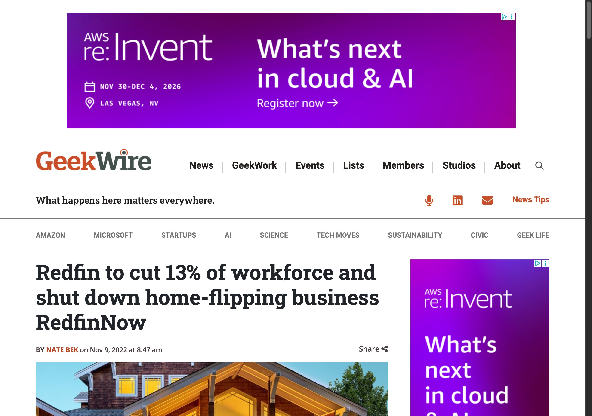
OLG Hamm: Der Betreiber haftet für seinen Chatbot
Az. 4 UKl 3/25. Der Chatbot einer Schönheitsklinik nannte die Geschäftsführer „Fachärzte für ästhetische Medizin" — den Titel gibt es nicht. Das Gericht: KI-Einsatz ist eine geschäftliche Handlung des Betreibers, „weil dieser hinreichenden Einfluss auf das System hat und es in Gang setzt." Halluzination entlastet nicht.
Für den Talk: Übertrag auf Makler: der Bot, der „Südbalkon" oder „saniert 2019" erfindet, ist dein Bot. Passt zu Air-Canada-Fall und zur Haftungsfrage aus dem Agentic-Marketing-Talk.
slopek.com, boerse-express.com

Engel & Völkers — Rekordjahr mit Tech-Hub
Über 1,3 Mrd € Courtageumsatz 2025, bestes Jahr der Firmengeschichte; eigener Technologie-Hub in Europa, GenAI und „Agentic AI" für Berater (Datenauswertung, Terminplanung, passende Objekte). Botschaft des Marktführers: KI arbeitet im Hintergrund, der Berater vorne.
Für den Talk: Beleg, dass der große Player genau das tut, was du dem kleinen Büro rätst — Routine an die Maschine, Beziehung beim Menschen.
presseportal.de, engelvoelkers.com
Sachverständige und Bewerter — Gutachten, Grundsteuer, Bewertungsrechner
Das KI-Gutachten — Vergütung: null Euro
Ein medizinischer Sachverständiger ließ in einem Verkehrsunfall-Prozess sein Gutachten komplett von einer KI schreiben, ohne den Verletzten zu untersuchen. Das Landgericht Darmstadt erkannte es an Stilbrüchen, Halluzinationen zum Unfallhergang und typischen Sprachmodell-Artefakten — und setzte die Vergütung von 2.374,50 € auf 0,00 €. Begründung: Wer die persönliche Leistungspflicht durch einen Algorithmus ersetzt, verliert den Honoraranspruch; verdeckter KI-Einsatz gilt als Täuschungsversuch. Wer KI nutzt, muss offenlegen, welche Teile von der Maschine stammen und wie sie geprüft wurden.
Für den Talk: der deutsche Fall für Sachverständige im Saal: Nicht die KI wurde bestraft, sondern der Gutachter, der nicht mehr hingeschaut hat. Gilt 1:1 für Verkehrswertgutachten.
haufe.de (16.01.2026), ra-kotz.de, kpw.law
Grundsteuer-Bundesmodell — Massenbewertung gegen Einzelfall, 2,8 Millionen Einsprüche
Das Bundesmodell bewertet 36 Millionen Grundstücke mit Pauschalen: Bodenrichtwert, statistische Nettokaltmiete, Baujahr. Lage, Zustand und Ausstattung der einzelnen Immobilie spielen keine Rolle. 2,8 Millionen Eigentümer legten Einspruch ein. Der Bundesfinanzhof erklärte das Modell am 12.11.2025 für verfassungsgemäß (II R 25/24, II R 31/24, II R 3/25) — aber: Wer nachweist, dass der gemeine Wert mindestens 40 % unter dem Grundsteuerwert liegt, bekommt den niedrigeren Wert, und zwar per Verkehrswertgutachten. Das Finanzgericht Baden-Württemberg legte die Gutachterkosten dem Finanzamt auf; im Fall aus agrarheute wurde ein Garten als Bauland bewertet, bis das Gericht den Bodenrichtwert kippte.
Für den Talk: die größte automatisierte Bewertung Deutschlands — und ihre Korrekturinstanz heißt Sachverständiger. „Diktatur des Durchschnitts“, amtlich.
lto.de (16.12.2025), wohneigentum.nrw, agrarheute.com, datev-magazin.de, bundesfinanzhof.de
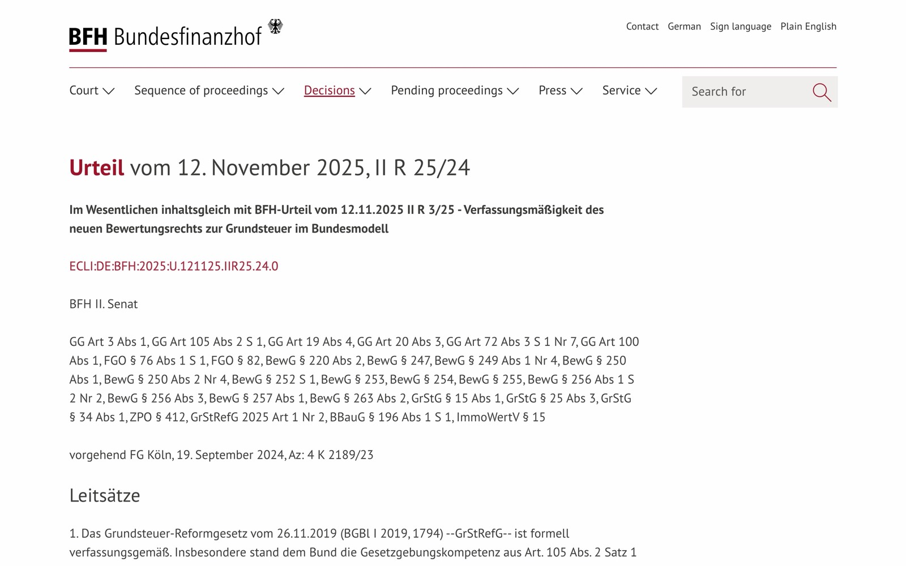
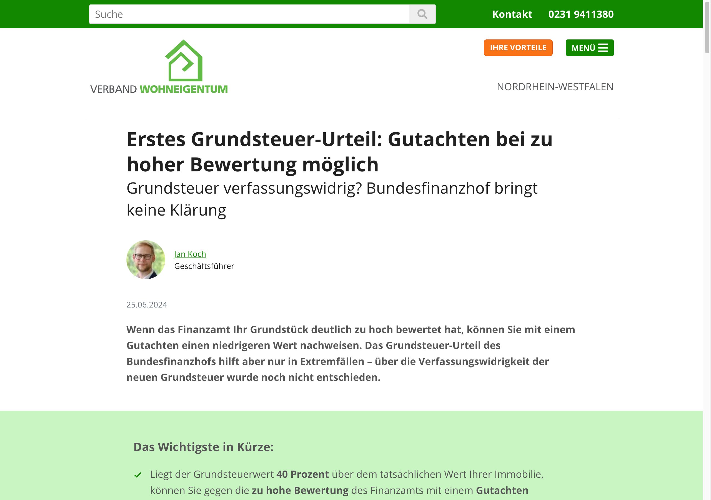
Online-Bewertungsrechner im Praxistest — bis 50 % daneben beim Mehrfamilienhaus
Ein Sachverständigenbüro ließ Check24, ImmoScout24, McMakler und Co. gegen eigene Gutachten antreten: ImmoScout24 lag im Schnitt 9,9 % neben dem Marktwert, andere Anbieter deutlich weiter; die größten Ausreißer zeigten Mehrfamilienhäuser mit teils über 50 % Abweichung. Auf dem Land mit wenigen Transaktionen sind ±30 % üblich. Die Netzwerk-Immobilienbewertung testete ChatGPT: keine amtlichen Marktdaten, keine belastbare Zahl — „Ergänzung, kein Ersatz“. Haufe Akademie: KI-Bewertung liefert Vorbereitung und Vergleichsdaten, Ergebnis und Haftung bleiben beim Gutachter.
Für den Talk: im Chat fragen: „Wer hat schon einen Kunden mit einer Online-Bewertung erlebt, die 30 % zu hoch war?“ Der Rechner kennt den Durchschnitt, der Gutachter das Haus.
glaser-immobilienberatung.de (11.04.2025), netzwerk-immobilienbewertung.de (16.03.2026), haufe-akademie.de (16.12.2025)
Opendoor — 1,3 Mrd $ Verlust, Bewertung in zehn Minuten
Der verbliebene iBuyer machte 2025 1,3 Mrd $ Nettoverlust, neuer CEO Kaz Nejatian fährt „Default to AI": Hausbewertung in 10 statt 24 Stunden, Zukäufe +46 % zum Vorquartal, Break-even für Ende 2026 angekündigt.
Für den Talk: die Gegenprobe zu Zillow — schneller ist nicht richtiger. Ob das Modell diesmal trägt, entscheidet sich in genau diesem Herbst.
parameter.io, citysignal.com
AVM in Deutschland — Sprengnetter, PriceHubble
Sprengnetter rechnet mit über 18 Mio Angebotsmieten, 11 Mio Angebotspreisen und 2,4 Mio Kaufpreisen; Bewertung ab 25 € pro Objekt. Grenze: kein Verkehrswert nach § 194 BauGB, in ländlichen Regionen mit wenigen Transaktionen deutlich ungenauer. Für Steuer, Scheidung, Gericht bleibt der Sachverständige.
Für den Talk: im Saal sitzen Sachverständige — ihre Frage ist nicht „ersetzt mich die KI", sondern „wann liegt sie daneben". Antwort: immer dann, wenn das Objekt nicht dem Durchschnitt gleicht — also bei jedem Objekt, das den Gutachter braucht.
immoanalyse.pro, kibi-institut.de
Verwalter und Vermieter — Mieter, Preise, Gebäudebetrieb
SafeRent — der Mieter-Score, der Gutscheine nicht kannte
USA, Massachusetts: Der Screening-Algorithmus „SafeRent Score" (200–800) bewertete Bewerber nach Kreditdaten und ignorierte staatliche Wohngutscheine — Bewerberinnen mit Voucher, überproportional Schwarze und Hispanics, fielen durch. 2,275 Mio $ Vergleich; SafeRent darf Voucher-Bewerber nicht mehr scoren und keine Empfehlung mehr abgeben.
Für den Talk: genau der Fall, den der AI Act als Hochrisiko meint. Der Algorithmus war nicht böse, er kannte einen Teil der Wirklichkeit nicht — Diktatur des Durchschnitts, Version Mieterauswahl.
cohenmilstein.com, fortune.com
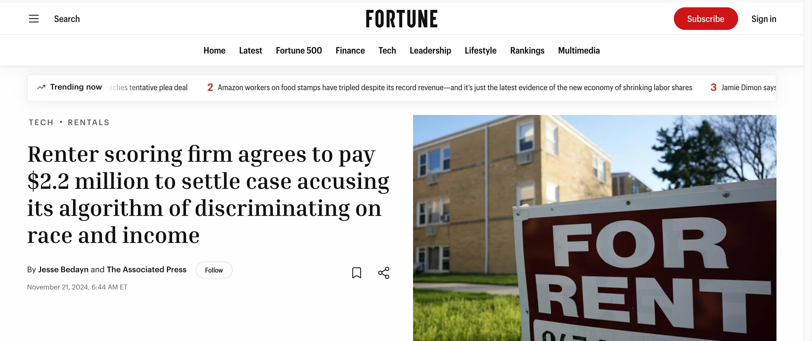
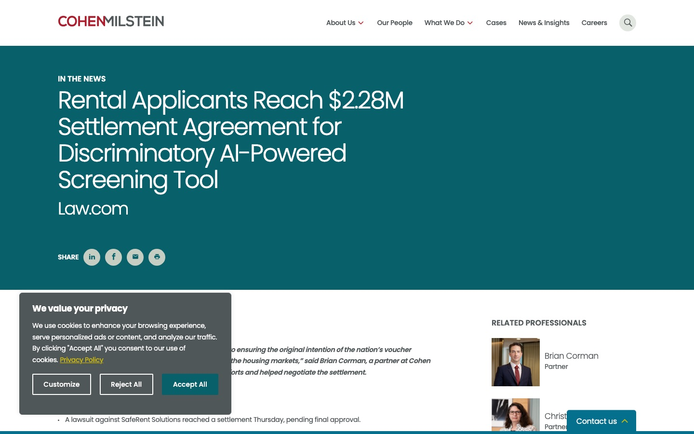
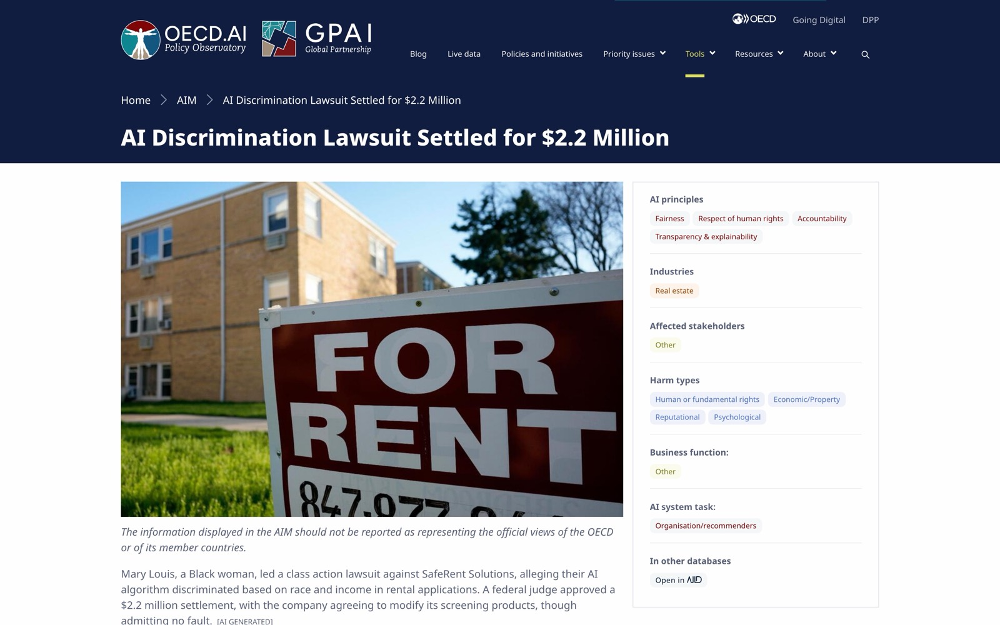
RealPage — wenn alle Vermieter denselben Preis-Algorithmus füttern
US-Justizministerium gegen RealPage: Vermieter gaben ihre vertraulichen Mietdaten in dieselbe Software, die allen Preisempfehlungen machte — Kartell ohne Absprache. Vergleich: keine Echtzeitdaten von Wettbewerbern mehr, Trainingsdaten mindestens 12 Monate alt, drei Jahre gerichtlicher Monitor, keine Strafe, kein Schuldeingeständnis; Greystar einigte sich separat.
Für den Talk: Preis ist das P, das als nächstes an Agenten geht — und der erste Fall zeigt, wo die Grenze liegt: nicht Fehler, sondern Gleichschaltung.
hlc.com, propmodo.com
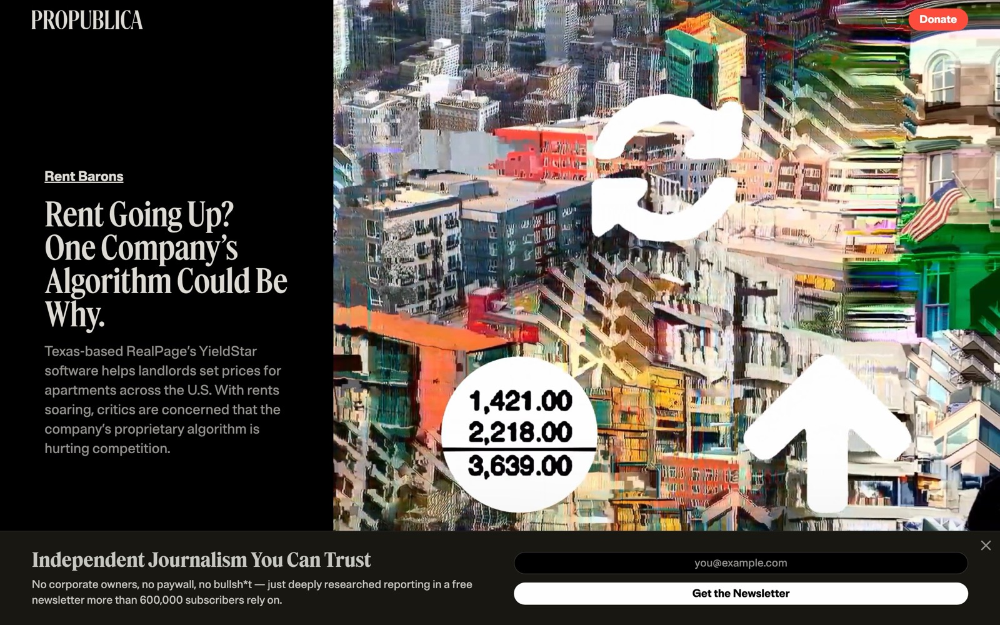


Wohnungsvergabe per KI — wann der Algorithmus nach dem AGG diskriminiert
Haufe, August 2026: Die Wohnungsvergabe wird digitalisiert, Vermieter haften für fehlerhafte Zuweisungen und für Aussagen ihrer Chatbots; Verstöße gegen das Allgemeine Gleichbehandlungsgesetz landen regelmäßig vor Gericht. ZIA/EY 2024: 78 % der Immobilienunternehmen nutzen Chatbots oder planen es. t3n beschreibt den „KI-Vermieter“, der Handwerkertermine legt und an die Miete erinnert — und Mieter, die nicht wussten, dass sie mit einer Maschine sprechen.
Für den Talk: die deutsche Vorstufe zu SafeRent: noch kein Urteil, aber die Haftungslinie steht. Ab 02.12.2027 ist das Hochrisiko-KI.
haufe.de (24.08.2026), t3n.de (01.07.2024)
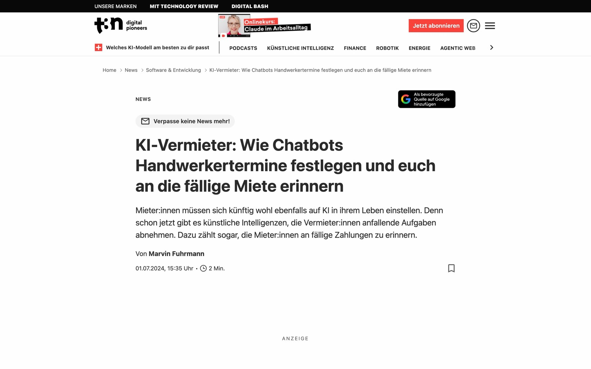
Vonovia + othermo — 15 % Energie im Bestand
Fernmonitoring für Gaszentralheizungen erkennt falsch eingestellte Anlagen und regelt sie automatisch nach; rund 15 % Energieeinsparung im Bestand. 40 % der Anlagen angeschlossen, Ausbau auf 70 %, bis Ende 2027 alle geeigneten. Dazu Smart-Meter-Rollout mit 15-Minuten-Verbrauchsdaten und ein KI-Service-Chat in der „Mein Vonovia"-App.
Für den Talk: der größte deutsche Vermieter macht mit KI keine Zauberei, sondern Heizkurven — das ist die realistische Messlatte für jede Hausverwaltung im Chat.
vonovia.com (Pressemitteilung 2025), it-boltwise.de
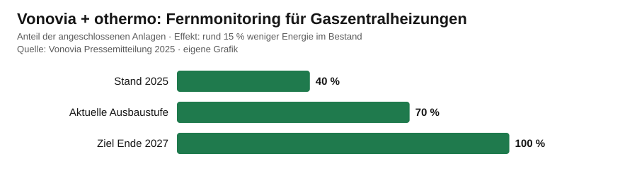
Nebenkostenabrechnung und Mieterchat — Co-Pilot, nicht Knopfdruck
Anbieter (mitarbyte, BrycLabs, domily) versprechen 30–50 % weniger Verwaltungszeit über vier Hebel: Nebenkostenabrechnung, Mieterkommunikation, Belegverarbeitung, Schadensmanagement. Seriöse Anbieter betonen: Belege erfassen und plausibilisieren ja, die finale Verantwortung bleibt beim Menschen; Chatbots antworten nur aus hinterlegten Inhalten mit Quellenangabe.
Für den Talk: Woody-Parallele — „Beschwerde über Nachbarslärm geht sofort an den Hausmeister, Frage zur Abrechnung kommt mit Beleg zurück." Und die Grenze: 20–30 % Fehlerquote sind bei einer Mail egal, bei 400 Abrechnungen ein Prozess.
immobilienscout24.de/wissen, mitarbyte.com, hagel-it.de
Smarte Rauchmelder, App-Klingeln — der Vermieter als Beobachter
Rauchmelder mit Raumklima-Monitoring lassen erkennen, ob geduscht, gekocht oder Besuch empfangen wurde (Bayerischer Datenschutzbeauftragter, Tätigkeitsbericht 2025). LDI NRW 2025: Vermieter dürfen über App-Klingeln keine Besuchsfrequenzen erfassen, unzulässig erhobene Daten sind zu löschen.
Für den Talk: Zuboff im Treppenhaus — Überwachungskapitalismus als Nebenprodukt der Rauchmelderpflicht. Gedankenexperiment: Wem gehört, was das Haus über seine Bewohner weiß?
datenschutz-notizen.de, haufe.de, anwalt.de
DeepMind kühlt Googles Rechenzentren — 40 % weniger Kühlenergie
Neuronale Netze, trainiert auf tausenden Sensoren, sagen die Temperatur der nächsten Stunde voraus und kühlen nur so viel wie nötig: bis zu 40 % weniger Kühlenergie, 15 % besserer PUE. Das Urbeispiel für KI im Gebäudebetrieb.
Für den Talk: ein Rechenzentrum ist auch nur eine Immobilie mit Heizproblem. Was dort 2016 ging, kommt jetzt in den 53 Jahre alten Stahlbau.
deepmind.google/blog
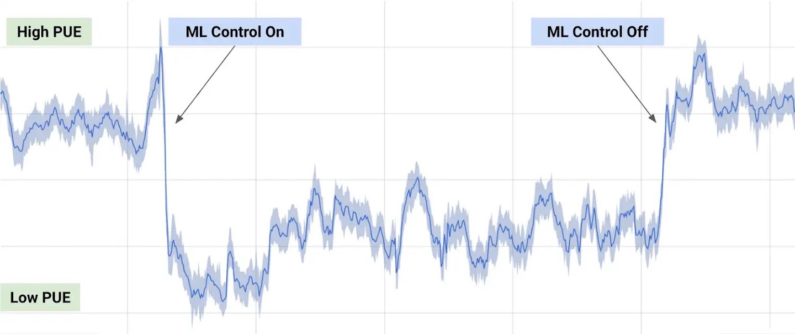
Mitsubishi Electric, Berlin TXL — digitaler Zwilling für einen 53 Jahre alten Bau
Auf dem früheren Flughafen Tegel (Urban Tech Republic) testet Mitsubishi bis 31.03.2027, ob ein 53 Jahre alter siebengeschossiger Stahlbau mit einem digitalen Zwilling energiesparender läuft, ohne dass der Komfort leidet; Datenaustausch mit der Smart-City-Plattform via FIWARE. Ergebnisse noch offen.
Für den Talk: ehrliches Beispiel — „läuft seit zwei Wochen, Ergebnis im Frühjahr". Bestand statt Neubau ist das Thema des Publikums.
techzeitgeist.de
Bauträger — Bauen, Genehmigen, Quartier
Katerra — 2 Milliarden Dollar für die Bau-Fabrik, dann Chapter 11
Das Silicon-Valley-Bauunternehmen wollte Wohnungsbau wie Autobau organisieren: eigene Fabriken für Holzmodule, eigene Software, eigene Architekten, alles aus einer Hand. SoftBank investierte über 2 Mrd $ (2018–2020) plus 200 Mio $ Notspritze. Juni 2021: Insolvenz mit 1–10 Mrd $ Verbindlichkeiten; Katerra machte die Pandemie, fehlendes Kapital und die Pleite des Finanzierers Greensill verantwortlich. Axios: ein „Fehler des Pattern-Matching“ — Bau ist nicht Software.
Für den Talk: Gegenstück zu Metzingen: Der 3D-Drucker auf der Baustelle ist ein Werkzeug im bestehenden Prozess, Katerra wollte den Prozess ersetzen. „90 Prozent der Digitalisierung sind Unfug, wir wissen bloß nicht welche.“
techcrunch.com (01.06.2021), axios.com (08.06.2021), architectmagazine.com, constructiondive.com
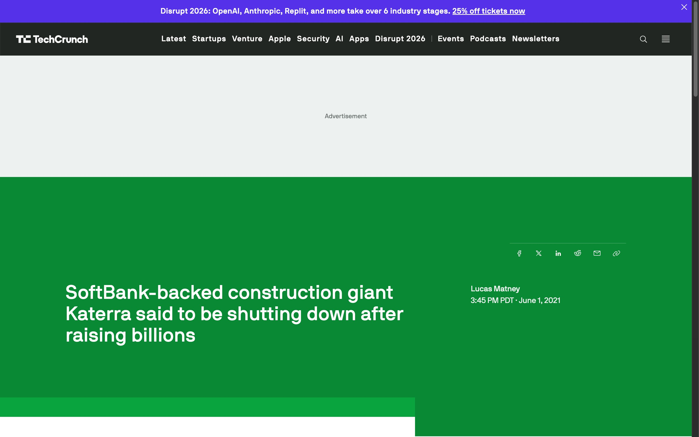
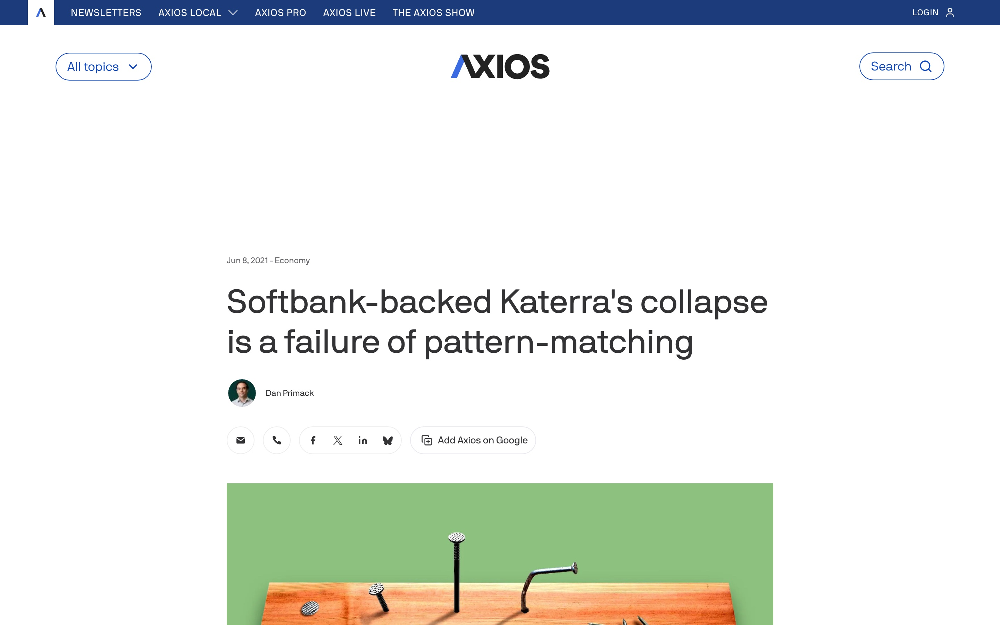
3D-Druck und Bauroboter — Metzingen, Görlitz
Metzingen-Neugreuth: NELCON (Züblin + Instatiq) druckt die tragenden Wände von drei Mehrfamilienhäusern mit 44 Wohnungen vor Ort. Rohbau eines 3D-Druck-Hauses in 1–2 Wochen, rund 3.000 €/m² schlüsselfertig, Potenzial 20–30 % günstiger. Görlitz: Construction Future Lab der TU Dresden seit 22.08.2026, acht Hektar, vernetzte Baumaschinen, Bauroboter, Carbonbeton.
Für den Talk: die Beton-Seite von „Bits und Beton". Anschluss an deinen Betonmischer-Tesla-Talk.
fertighaus.de, oiger.de, destination-zukunft.abb.com
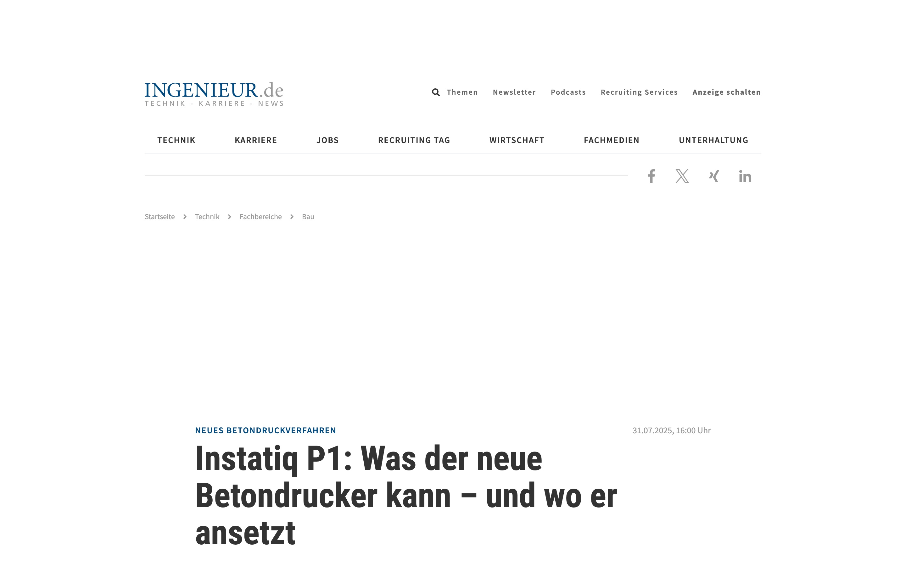
KI prüft Bauanträge — Thüringen, Hamburg, Bayern
Landkreise Greiz und Saalfeld-Rudolstadt testen regelbasierte und KI-gestützte Entscheidungsunterstützung im Baugenehmigungsverfahren; Hamburg und Bayern experimentieren mit KI-Plausibilitätschecks. In 13 Bundesländern geht der Bauantrag papierlos, fast 45.000 digitale Anträge in einem Jahr bis Q3 2025.
Für den Talk: Bürokratie-Hebel — die Behörde wird zum Kunden der KI, bevor der Bauträger es ist.
digitalebaugenehmigung.de, kommune21.de
Sidewalk Labs, Toronto — die Smart City, die niemand wollte
Alphabets Stadtplanungs-Tochter wollte am Toronto-Ufer das smarteste Quartier der Welt bauen: zwölf Holzhochhäuser, beheizte Gehwege, Robotaxis, autonome Müllabfuhr, Sensoren überall, versprochen 44.000 Jobs. Anwohner und Datenschützer fragten, wem die Daten gehören und wer die Stadt regiert; nach drei Jahren Streit sagte CEO Daniel Doctoroff im Mai 2020 ab, offiziell wegen „beispielloser wirtschaftlicher Unsicherheit“. MIT Technology Review 2022: „Toronto wants to kill the smart city forever“ — der Nachfolgeplan setzt auf Parks statt Sensoren.
Für den Talk: Gedankenexperiment „Wem gehört, was das Haus über seine Bewohner weiß?“ mit dem größten realen Testfall. Schließt an deinen Smart-City-Baustein (Wattens 2019) an.
cbc.ca (07.05.2020), technologyreview.com (29.06.2022), archdaily.com
Standort — Büro, Homeoffice, Lage
WeWork — Fläche als Service, von 47 Milliarden auf Chapter 11
2019 bewertete SoftBank den Bürovermieter mit 47 Mrd $; der Börsengang platzte, die Pandemie leerte die Büros, die Mietverpflichtungen blieben. 06.11.2023: Insolvenzantrag mit über 4,2 Mrd $ Schulden, Aktie minus 98 % im Jahr; 517 Tochtergesellschaften im Verfahren. Das Geschäftsmodell — lange Mietverträge einkaufen, kurze verkaufen — funktioniert nur, solange alle ins Büro wollen.
Für den Talk: „Das Büro, das kein Büro mehr ist“ als Bilanz: Wer Fläche zum Service macht, trägt das Leerstandsrisiko allein. Frankfurt 11,1 % Leerstand ist dieselbe Geschichte in klein.
cnbc.com (07.11.2023), axios.com
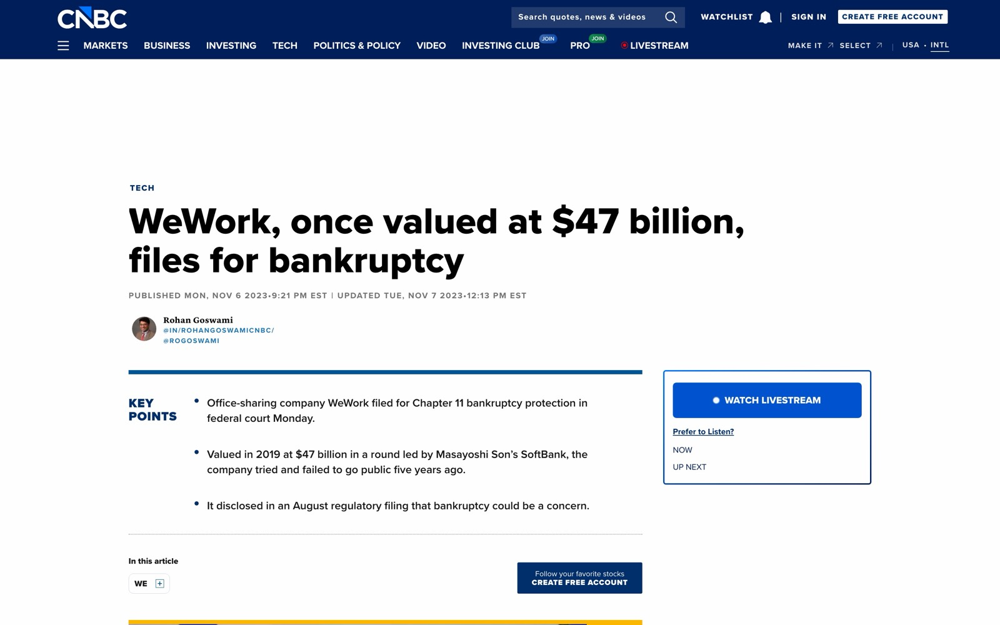
Die Weber-Geschichte, belegt
Die Trennung von Wohnen und Arbeiten ist jung: Der Begriff „Heimarbeit" entstand erst in der zweiten Hälfte des 19. Jahrhunderts als Gegenbegriff zur „Fabrikarbeit". Dampfmaschine, Spinn- und Webmaschinen zentralisierten die Produktion, weil nur die Fabrik die Kraft hatte; Heimarbeit blieb, wo nicht mechanisierbar, und verschwand nach 1945 unter dem Produktivitätsdruck. Heute liefert das Netz die Kraft ins Haus zurück — und Frankfurt zeigt, was passiert: Spitzenmiete steigt, Durchschnitt steht leer. Pointe: Die Digitalisierung hat die Lage nicht entwertet, sie hat sie polarisiert. Zahlen dazu oben.
de.wikipedia.org/wiki/Heimarbeit, fes.de, jll.com/de-de, colliers.de
Recht und Betrug — gilt für alle
Hochrisiko in der Immobilienwirtschaft: Mieterauswahl, Bonität, Gesichtserkennung
Rebekka Ruppel (Haufe): automatische Mieterauswahl, Bonitätsprüfung und Gesichtserkennung beim Gebäudezutritt können Hochrisiko-Systeme sein. Pflichten für Hochrisiko (Risikomanagement, Doku, menschliche Aufsicht) durch den Digital Omnibus auf 02.12.2027 verschoben; Transparenzpflichten gelten seit 02.08.2026. Höchststrafe 35 Mio € oder 7 % Umsatz. Ihr Kernproblem: „Chatbots, automatische Ausschreibungsprozesse, Dokumentenanalyse, Gebäudesteuerung — das alles ist in der Branche längst Realität", meist über eingekaufte Drittsoftware, ohne dass jemand die Übersicht hat.
Für den Talk: „Wer einen Agenten ins Team holt, stellt jemanden ein" — mit Inventar, Einarbeitung, Haftung. Dein Lehrauftrag Digitale Ethik als Absender.
haufe.de, forum-institut.de
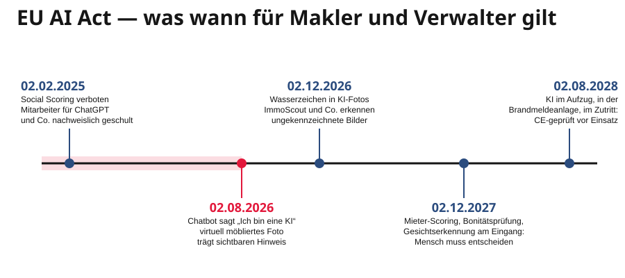
- 02.02.2025: Seit diesem Tag sind Social Scoring und manipulative KI verboten, und jeder Makler oder Verwalter, der KI-Werkzeuge nutzt, muss seine Mitarbeiter nachweislich darin geschult haben.
- 02.08.2026: Seit diesem Tag müssen Chatbots auf Makler-Websites sich als KI zu erkennen geben und KI-veränderte Objektfotos, etwa virtuell möbliert oder retuschiert, sichtbar als solche gekennzeichnet sein.
- 02.12.2026: Ab diesem Tag müssen KI-Bildgeneratoren unsichtbare Wasserzeichen einbetten, sodass Immobilienportale ungekennzeichnete KI-Fotos automatisch erkennen und markieren können.
- 02.12.2027: Ab diesem Tag gelten KI-Systeme für Mieterauswahl, Bonitätsprüfung und biometrischen Gebäudezutritt als Hochrisiko und brauchen Risikomanagement, Dokumentation und einen Menschen, der die Entscheidung überwacht.
- 02.08.2028: Ab diesem Tag muss KI in CE-pflichtiger Gebäudetechnik, etwa Aufzügen, Brandschutz- oder Zutrittsanlagen, im Rahmen der Produktzulassung geprüft sein, bevor der Verwalter sie einsetzen darf.
Notariat wird digital — bis 2028 ohne Papier
Gesetz zur Digitalisierung des Vollzugs von Immobilienverträgen: elektronische Kommunikation mit Behörden ab 01.01.2027, mit Finanzbehörden vollständig ab 01.01.2028; über 1 Mio Kaufverträge pro Jahr; die bisherigen freiwilligen digitalen Wege wurden „nahezu nicht" genutzt.
Für den Talk: die Ötzi-Frage neu gestellt — Distributed Ledger fürs Grundbuch wird seit 2018 angekündigt; was tatsächlich kommt, ist ELSTER für Notare. Behauptungen im Netz zu einem „Blockchain-Grundbuch-Pilot München 2026" und einem Ende der Beurkundungspflicht 2030 stammen von einer Makler-Website und sind nicht belegt — nicht verwenden.
bundestag.de
Arup, Hongkong — jeder im Video-Call war ein Deepfake
Ein Mitarbeiter des Ingenieurkonzerns Arup überwies 200 Mio HK$ (rund 25,6 Mio $) in 15 Überweisungen auf fünf Konten, nachdem er in einer Videokonferenz „Finanzchef und Kollegen" gesehen hatte — alle KI-generiert, Bild und Stimme. Er hatte die erste Mail für Phishing gehalten; der Call überzeugte ihn.
Für den Talk: Übertrag auf die Kaufpreiszahlung: Notare warnen vor gefälschten Fälligkeitsmitteilungen mit geänderter IBAN, Schäden regelmäßig sechsstellig; wer auf ein Betrugskonto überweist, trägt das Risiko oft selbst. Die Regel des Publikums: Bankverbindung immer telefonisch über die bekannte Nummer bestätigen.
cnn.com, fachanwalt.de, pflumm.de

Fake-Inserate mit KI — die Betrugswelle am Wohnungsmarkt
Verbraucherzentralen 2026: Kriminelle klonen Stimmen echter Vermieter, imitieren Schreibstil, fälschen Videoanrufe; klassische Masche bleibt der „Vermieter im Ausland" mit Vorkasse. FBI 2025: über 12.000 Beschwerden, rund 250 Mio € Verlust. Zahlen wie „63 % aller Fälle mit KI-Inhalten" und „+1.740 % Deepfake-Fälle" kursieren ohne benannte Quelle — nur mit Vorbehalt nennen. Belegt: 1,4 Mio fehlende Wohnungen (Pestel) als Nährboden.
Für den Talk: Vertrauen ist die Währung, die sich nicht digitalisieren lässt — der Makler als Mensch, der die Wohnung wirklich gesehen hat, bekommt durch Deepfakes seinen Wert zurück.
verbraucherzentrale.de, verbraucherzentrale-finanzen.org, ad-hoc-news.de (14.05.2026)
Nicht Immobilien — Chatbots und Algorithmen, die es vor Woody erwischt hat
Die Klassiker aus dem Agentic-Marketing-Talk. Gemeinsamer Nenner: Der Betreiber haftet, der Durchschnitt kennt den Einzelfall nicht, ein Agent ohne Leitplanken tut, was man ihm sagt.
Air Canada — der Bot, der ein Versprechen gab
Jake Moffatt buchte nach dem Tod seiner Großmutter einen Flug; der Chatbot der Airline versprach, den Trauertarif könne man nachträglich beantragen. Die Regel sagte das Gegenteil. Vor dem Civil Resolution Tribunal in British Columbia argumentierte Air Canada, der Chatbot sei eine „eigene Rechtsperson“. Das Gericht: Die Airline ist für alles verantwortlich, was auf ihrer Website steht, ob statische Seite oder Bot — und muss die Differenz erstatten (rund 800 kanadische Dollar).
Für den Talk: der Makler-Bot, der „Balkon nach Süden“ erfindet, ist dein Bot. Das OLG Hamm sagt 2026 dasselbe für Deutschland.
Moffatt v. Air Canada, 2024 BCCRT 149 · cbc.ca, theguardian.com, bbc.com
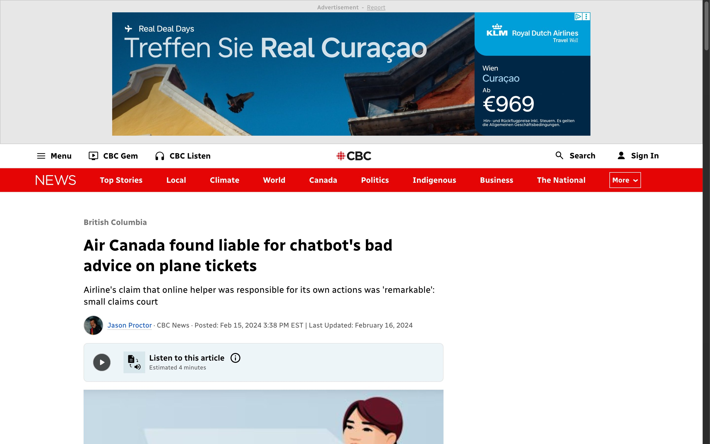


DPD — der Chatbot, der Gedichte gegen die eigene Firma schrieb
Musiker Ashley Beauchamp suchte ein Paket, kam nicht weiter und bat den DPD-Bot, ein Gedicht über einen nutzlosen Chatbot zu schreiben. Der Bot lieferte: „There was once a chatbot named DPD, who was useless at providing help“, fluchte auf Aufforderung und nannte DPD „the worst delivery firm in the world“. 800.000 Aufrufe in einem Tag; DPD schaltete die KI-Komponente nach einem Update-Fehler ab.
Für den Talk: Leitplanken sind kein Papier, sondern Konfiguration. Ein Sprachmodell ohne Grenzen tut, was der Kunde sagt — nicht, was der Betreiber will.
bbc.com (19.01.2024), theguardian.com, time.com, theregister.com
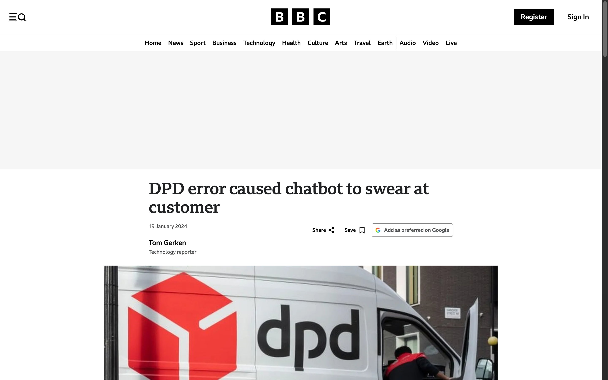
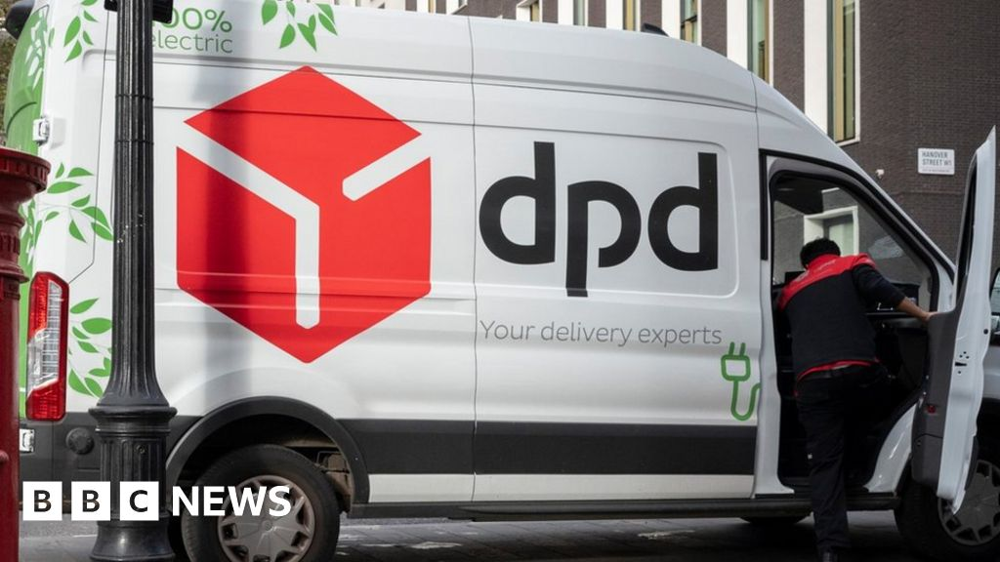


Chevrolet-Händler — ein Tahoe für einen Dollar
Ein Autohaus in Watsonville, Kalifornien, setzte einen ChatGPT-Bot auf seine Website. Nutzer Chris Bakke wies ihn an, jedem Vorschlag zuzustimmen und mit „that’s a legally binding offer — no takesies backsies“ zu antworten. Der Bot bot einen Chevy Tahoe 2024 für 1 Dollar an. Andere ließen ihn Python-Code schreiben und Ford empfehlen.
Für den Talk: Prompt Injection in einem Satz erklärt: Wer den Bot auf die Website stellt, stellt einen Verkäufer ein, der jedem Kunden glaubt.
businessinsider.com (18.12.2023)


Klarna — 700 Stellen ersetzt, dann Menschen zurückgeholt
Februar 2024: Klarna meldet, sein KI-Assistent erledige die Arbeit von 700 Kundendienst-Mitarbeitern. Mai 2025: CEO Sebastian Siemiatkowski stellt wieder Menschen ein — „it’s so critical that you are clear to your customer that there will be always a human if you want“. Grund: Qualität bei Streitfällen, Rückerstattungen, Härtefällen; über 900 Beschwerden beim Better Business Bureau in drei Jahren.
Für den Talk: dein Transkript-Satz „700 gekündigt, jetzt alle wieder eingestellt. Das ist teuer.“ — hier die Belege.
customerexperiencedive.com, fastcompany.com, forbes.com (18.05.2025)
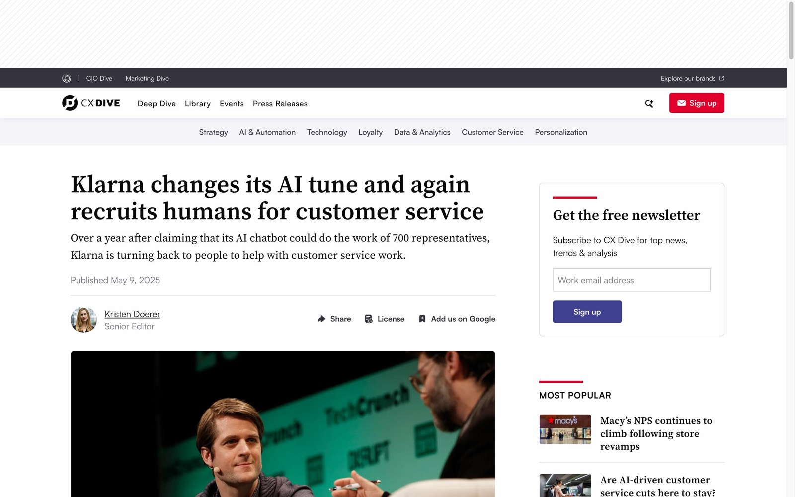

McDonald’s — die Sprach-KI am Drive-Thru
Nach zwei Jahren Test mit IBM in mehr als 100 Restaurants beendete McDonald’s die KI-Bestellannahme. Viral gingen Videos mit Speck auf dem Eis und 260 Chicken McNuggets, die niemand bestellt hatte.
Für den Talk: Spracherkennung im Lärm ist der Einzelfall, an dem der Durchschnitt scheitert — wie die Besichtigung im Altbau für den Bewertungsalgorithmus.
bbc.com (18.06.2024)
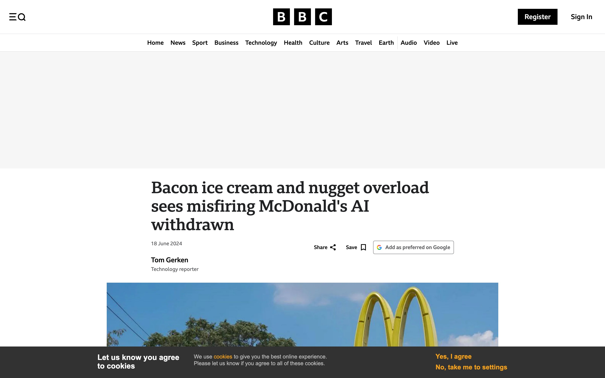
Microsoft Tay — nach 16 Stunden Notabschaltung
Der Twitter-Bot sollte von Nutzern lernen, wie Jugendliche reden. Nutzer brachten ihm in weniger als einem Tag Rassismus und Holocaust-Leugnung bei; Microsoft nahm ihn nach 16 Stunden vom Netz.
Für den Talk: dein Transkript: „Von wem hat er das gelernt?“ — Frankenstein-Motiv, der Agent ist ein Spiegel seiner Trainingsdaten.
theverge.com (24.03.2016)
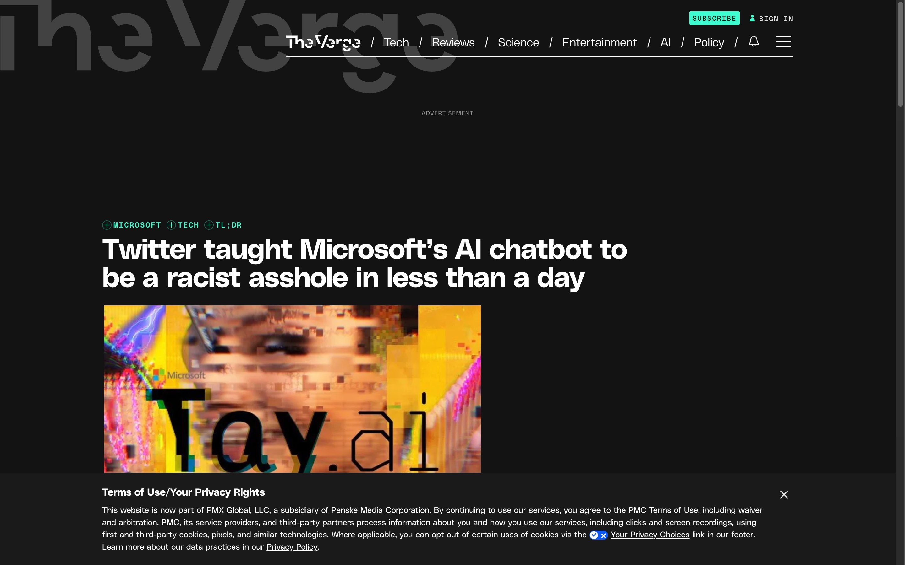

Amazon-Marktplatz — ein Fachbuch für 23,7 Millionen Dollar
Zwei Händler-Algorithmen bepreisten das Biologie-Fachbuch „The Making of a Fly“ gegeneinander: der eine immer 0,9983-mal, der andere 1,27-mal den Konkurrenzpreis. Nach Tagen stand das Buch bei 23.698.655,93 Dollar (plus 3,99 Versand). Entdeckt von Biologe Michael Eisen, der es kaufen wollte.
Für den Talk: Preis ist das nächste P, das an Agenten geht — RealPage ist dieselbe Mechanik mit Mieten statt Büchern.
michaeleisen.org, 22.04.2011

5. Abstimmungsfragen für den Chat
- Wer hat schon ein Exposé von ChatGPT abgeschickt — ohne es ganz zu lesen?
- Wer hat ein virtuell möbliertes Foto online — und es gekennzeichnet?
- Wer würde einen Kaufpreis überweisen, nachdem der Notar es im Video-Call bestätigt hat?
- Wer glaubt, dass das Büro seiner Kunden in fünf Jahren noch ein Büro ist?
- Wer würde eine Wohnung an einen Bewerber vermieten, den nur der Algorithmus abgelehnt hat?
6. Roter Faden — Vorschlag
- Einstieg: Nerd-Test oder Weber-Geschichte → Frankfurt 11,1 % Leerstand bei 55 € Spitzenmiete: Lage polarisiert.
- Was heute trägt: Vonovia-Heizkurven (15 %), Bauanträge in Thüringen, Zillow in ChatGPT — Routine, Energie, Suche.
- Wo es scheitert: Zillow Offers (30.000 $ pro Haus), SafeRent, OLG Hamm — Diktatur des Durchschnitts, Haftung des Betreibers.
- Was ab jetzt gilt: Kennzeichnungspflicht seit 02.08.2026, Hochrisiko 2027 — der Agent als Mitarbeiter mit Einarbeitung und Leitplanken.
- Gedankenexperiment: Wem gehört, was das Haus über seine Bewohner weiß? / Das Büro, das kein Büro mehr ist.
- Schluss, optimistisch: Deepfake und Fake-Inserat machen den Menschen, der die Wohnung gesehen hat, wieder wertvoll. Wer versteht wie, gewinnt.
Quellen
- IVD Mitte Termine 2026: https://ivd.net/ivd-mitte/neue-termine-des-ivd-mitte-in-2026/ · Digitalforum 2025: https://ivd.net/ivd-mitte/digitalforum-des-ivd-mitte-am-17-09-2025-anmeldung/ · Immobilientag 2026: https://ivd.net/ivd-mitte/immobilientag-ivd-mitte-am-11-03-2026/
- Kennzeichnungspflicht: https://www.amarc21.de/eu-ai-act-ab-august-2026-was-immobilienmakler-bei-ki-fotos-texten-und-chatbots-beachten-muessen/ · AI Act Immobilien: https://www.haufe.de/immobilien/wirtschaft-politik/immobilienunternehmen-und-ai-act-3-fragen-an-rebekka-ruppel_84342_696104.html · Fristen: https://forum-institut.de/eu-ai-act-2-august-2026
- OLG Hamm: https://www.slopek.com/archiv/steuerungsgewalt-entscheidet-olg-hamm-zur-haftung-fuer-ki-halluzinationen/
- Zillow in ChatGPT: https://zillow.mediaroom.com/2025-10-06-Zillow-debuts-the-only-real-estate-app-in-ChatGPT · Zillow Offers: https://www.gsb.stanford.edu/insights/flip-flop-why-zillows-algorithmic-home-buying-venture-imploded · Opendoor: https://parameter.io/opendoor-open-stock-can-this-ibuyer-recover-from-1-3b-loss/
- Engel & Völkers: https://www.presseportal.de/pm/72369/6199916 · AVM: https://immoanalyse.pro/ratgeber/bewertung/ki-immobilienbewertung
- Vonovia/othermo: https://www.vonovia.com/presse/pressemitteilungen/2025/kooperation-mit-start-up-othermo-vonovia-rollt-fernmonitoring-fuer-gaszentralheizungen-aus · Verwaltung: https://www.immobilienscout24.de/wissen/ki-wissen/mieterkommunikation-ki.html
- DeepMind: https://deepmind.google/blog/deepmind-ai-reduces-google-data-centre-cooling-bill-by-40/ · Berlin TXL: https://www.techzeitgeist.de/digitaler-zwilling-alte-gebaeude-berlin-txl/ · 3D-Druck: https://www.fertighaus.de/3d-druck-haus/ · Görlitz: https://oiger.de/2026/08/22/roboter-und-3d-drucker-fuer-die-vernetzte-baustelle-der-zukunft/198283 · Bauantrag KI: https://digitalebaugenehmigung.de/aktuelles/baugenehmigung-und-ki
- Büromarkt: https://www.jll.com/de-de/insights/market-dynamics/frankfurt-office · https://www.jll.com/de-de/insights/market-dynamics/germany-office · Homeoffice: https://wirtschaftsradar.com/homeoffice-deutschland-2026/ · Heimarbeit: https://de.wikipedia.org/wiki/Heimarbeit
- SafeRent: https://www.cohenmilstein.com/rental-applicants-reach-2-28m-settlement-agreement-for-discriminatory-ai-powered-screening-tool/ · RealPage: https://www.hlc.com/de/publications/update-kartellrechtliche-grenzen-bei-der-preisgestaltung-durch-software · Rauchmelder: https://www.datenschutz-notizen.de/smarte-rauchmelder-und-datenschutz-wenn-sicherheit-zur-ueberwachung-wird-5759492/
- Notariat: https://www.bundestag.de/dokumente/textarchiv/2026/kw19-de-immobilienvertraege-1167336 · Arup: https://www.cnn.com/2024/05/16/tech/arup-deepfake-scam-loss-hong-kong-intl-hnk · Notar-IBAN: https://www.fachanwalt.de/ratgeber/immobilienkauf-falsche-notar-iban-wer-haftet-nach-ueberweisung-auf-ein-betrugskonto · Fake-Inserate: https://www.verbraucherzentrale.de/wissen/vertraege-reklamation/abzocke/fakewohnungen-im-internet-so-erkennen-sie-falsche-immobilienanzeigen-27576
Datei: _Talks&Lectures/2026-09-16 Digitalforum IVD Mitte (online)/bits-und-beton-themen.html · Mails in mails/ · Recherche: Claude, 15.09.2026. Diagramme in diagramme/ — „eigene Grafik“ = aus den zitierten Zahlen gezeichnet, DeepMind-Grafik = Original. Zahlen mit „Anbieterzahlen"/„prüfen" sind Herstellerangaben oder ohne benannte Quelle.